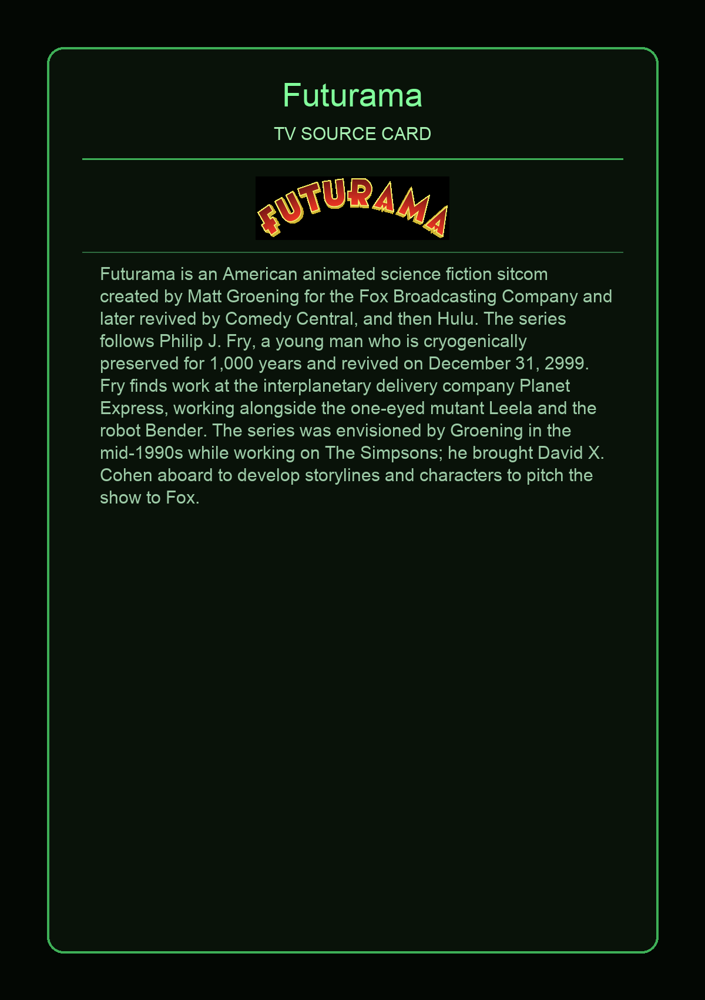

Futurama is an American animated science fiction sitcom created by Matt Groening for the Fox Broadcasting Company and later revived by Comedy Central, and then Hulu. The series follows Philip J. Fry, a young man who is cryogenically preserved for 1,000 years and revived on December 31, 2999. Fry finds work at the interplanetary delivery company Planet Express, working alongside the one-eyed mutant Leela and the robot Bender. The series was envisioned by Groening in the mid-1990s while working on The Simpsons; he brought David X. Cohen aboard to develop storylines and characters to pitch the show to Fox.
This page aggregates references to the source material behind Name Lore entries.